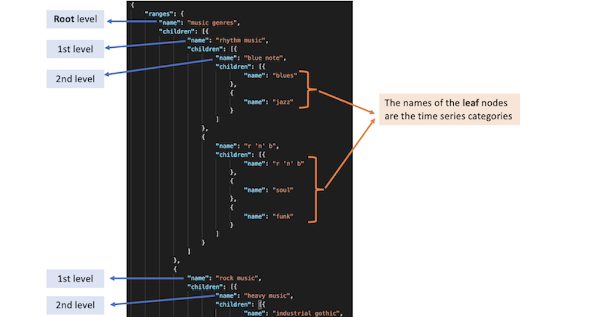
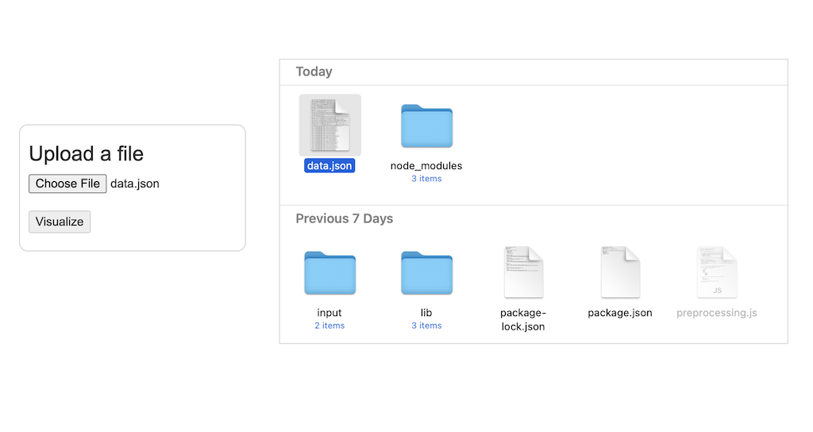

Instructions to generate and load a dataset
MultiStream currently supports a JSON file containing time series organized in a hierarchy. We provide a script to generate such a file. Follow the above instructions to generate a supported file.
Preparing your data
First of all, we need two files: a CSV file for the time series data and a JSON file for the hierarchy structure:
-
A CSV file containing the time series with the following headers: (example)
- First column = 'date', an ISO-8601 date base formatted as YYYY-MM-DD or YYYY-MM-DD HH:mm:ssZ (Z necessary for specifying UTC). Time series granularity can be: minutes, hours, days, weeks, months and years. E.g., 2000-01-01 or 2016-05-28 19:50:00
- Other columns = time series category names, strings corresponding to the names of the time series categories.

- A JSON file containing the hierarchical structure with the following properties: (example) 
Generating a supported file
We provide a script to generate a JSON file that MultiStream can load.
Prerequisites
- Node.js v14 or later
- Download the folder containing the required script and libraries from this link
- Go to the downloaded folder and install the node dependencies: $npm i
Run the script from the command line
Once the node dependencies are installed, you can run the preprocessing.js script with the following arguments:- required --raw: path to the time series data (CSV file)
- required --hierarchy: path to the hierarchy structure (JSON file)
- required --output: path to the output preprocessed file (JSON file)
- required --granularity: time series granularity. E.g., "minutes" or "hours" or "days" or "weeks" or "months" or "years"
- required --step: time step between each observation. E.g., if "granularity"="minutes" and "step"=5, then it means that the time series is every five minutes. Most of the time step=1
- optional --datatype: time series data type
E.g.: $node preprocessing.js --raw=input/data.csv --hierarchy=input/hierarchy.json --output=data.json --granularity='years' --step=1 --datatype='number of bands'
This script will generate data.json which can be loaded by MultiStream
Loading in the application
Go to the MultiStream web application and upload the generated JSON file (e.g., data.json)